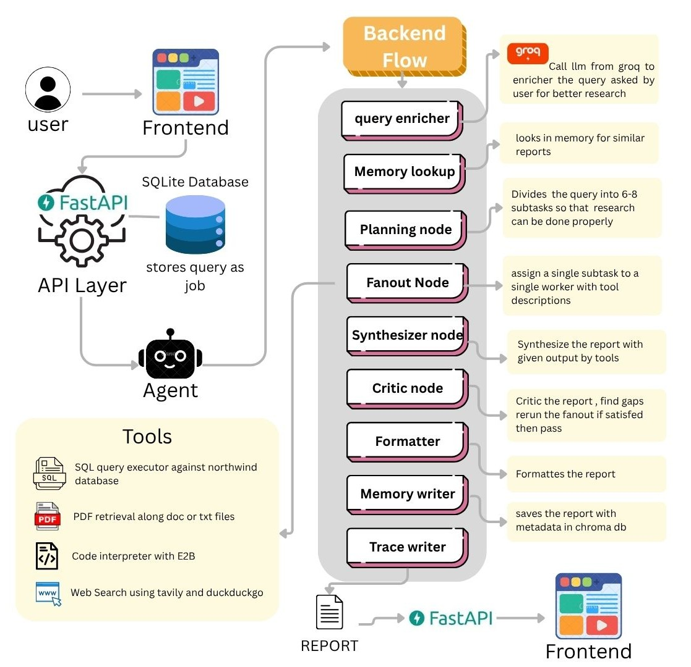

This research agent takes any natural language research question, autonomously breaks it down into focused subtasks, and executes them across multiple tools — searching the web, querying databases, reading documents, and running calculations — all in parallel. It then synthesizes everything into a single report with inline citations, evaluates its own output, and fills any gaps before delivering the final answer. No hallucinations, no manual intervention.
Github Link →Tech Professionals generally have disconnected sources of information — internal databases (sales, ops data), internal documents (reports, policies, contracts), and the open web (market context, competitor info).
For getting correct information they have to go through manually querying the database, digging through shared drives, and searching separately online, then stitching it all together by hand.
That is time consuming and can not be verified quickly — for that they have to go through the same hassle again.
An autonomous agent that turns one question into one answer — across every source you have.
Natural-language query in, structured report out — no need to know which system holds the answer or how to phrase a query for each one
DB-agnostic SQL executor — runs against Northwind locally today, swappable to Postgres (or any SQL DB) via config, no agent-logic changes required
Long-term memory (Chroma) — past research sessions are embedded and semantically searchable, so returning users can retrieve prior answers
Cited, structured output — PDF, with inline citations tied back to source, not an unattributed wall of text
Full Observability — Every node appends a structured trace entry with start time, completion time and node-specific detail
Multiple Tool Integration — Four specialized tools: live web search, SQL query execution, document retrieval and sandbox for python code
Fault Tolerant by Design — Tool failures never crash the agent. Web search falls back to DuckDuckGo. Memory failures are silently logged.
Request enters the router through the FastAPI layer.
Routers only route, services hold the logic, models define the schema — separation of concerns, so the endpoint function itself stays thin. A job ID is returned immediately; the graph runs as a background task, not blocking the request.
Memory checked first — Chroma as the entry point.
Before the graph does any reasoning, it checks Chroma for relevant sessions and chunks.
Planner decomposes — the only node that decides, not fetches.
The planner breaks the enriched question into 3–8 sub-tasks.
Fan-out — parallel execution across a config-driven tool layer.
Sub-tasks dispatch simultaneously to: SQL executor, PDF retriever, web search, and code interpreter (E2B sandbox).
Synthesizer merges results into one draft.
Structured rows, document excerpts, web snippets, and computed values are merged into a single answer.
Formatter finalizes, trace_writer logs it — two parallel outputs, two stores.
The approved draft becomes a Markdown + PDF report with citations, going to the user.
Memory written back — closing the loop, three stores staying independent.

Three stores, three jobs — deliberately not one shared database.
Tool-level: each tool (SQL executor, PDF retriever, web search, code interpreter) tested in isolation.
Node-level: each LangGraph node tested with a fixed input state — does the planner produce sensible sub-tasks, does the critic correctly flag a bad draft — without running the whole graph end-to-end.
Graph-compilation level: the full graph tested as a compiled whole.
Right now the client polls /status/[job_id] — functional, but the user watches a "processing" state with no visibility into which node is running. Since the graph already has 9 named steps, streaming progress ("planning done → gathering → critiquing") would make the UX and the architecture finally match — the info exists, it's just not surfaced live.
It's a real gap: right now the agent proceeds fully autonomously even when a sub-task is ambiguous (e.g., which time period "recent" means). A lightweight pause-and-confirm at one or two clear ambiguity points would meaningfully raise trust without rebuilding the graph.
Right now the model does not handle rate limit hits or exhausted tokens, as we are using Groq for providing the model — so addressing that is critical if the project goes live.